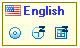

How it works?
The Language Indicator flag appears whenever you click on an editable area or when the focus shifts to one, as demonstrated in the video on the right.
Hovering the mouse cursor over the flag icon transforms it into a more detailed and informative window:

Now you can do the following:
- Click on the flag icon or the language name to change the keyboard language layout.
- Click the Settings button to open the Settings dialog.
 Click the Snooze button to pause Language Indicator temporarily for a predefined time, which can be changed in the Settings dialog.
Click the Snooze button to pause Language Indicator temporarily for a predefined time, which can be changed in the Settings dialog.- Click the Disable button to permanently disable Language Indicator for this application. (You can remove application from the disable list in the Settings dialog)

Settings Dialog
Most of Language Indicator behaviour and appearance can be changed in the Settings dialog: